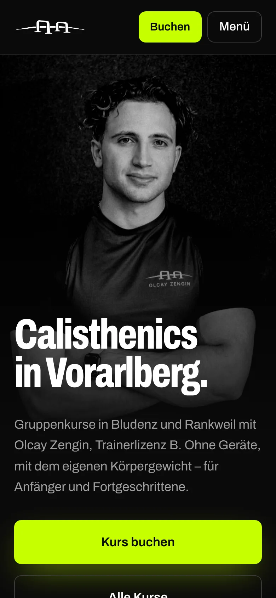
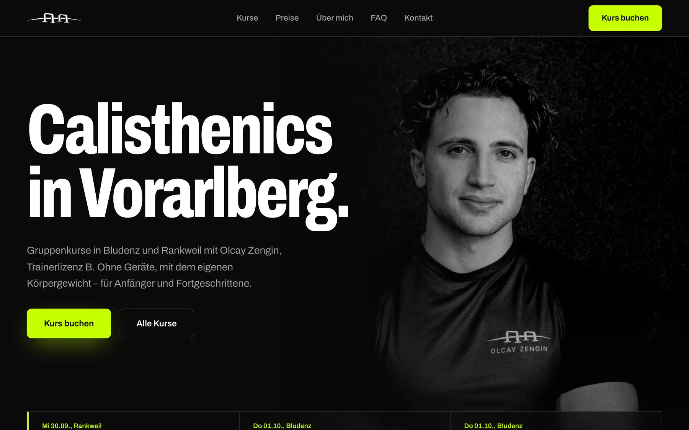

Projekte
OZ Calisthenics
Kursbuchung und Website für einen Calisthenics‑Coach in Bludenz und Rankweil

[TEXT LUCA] Was Olcay wollte, was schwierig war, worauf du stolz bist.
- Kunde
- Olcay Zengin, Calisthenics‑Coach, Bludenz und Rankweil
- Zeitraum
- seit September 2026
- Seiten
- Start, Kurse, Preise, Über mich, FAQ, Kontakt, Buchen, Konto, Admin
- Funktionen
- Kurse buchen und bezahlen (Stripe Checkout), Konto mit Passkeys, Belege, Erinnerungen und Tageslisten per Mail, Storno und Widerruf; Admin für Termine, Kurse, Buchungen und Kunden
- Stack
- Next.js 16, React 19, TypeScript, Tailwind 4, PostgreSQL mit Drizzle, Better Auth, Stripe, pg‑boss, Scaleway Mail, Umami
- Betrieb
- Docker‑Image aus GitHub Actions, Coolify auf einem Hetzner‑Server, Staging vor jeder Änderung an Buchung und Zahlung
